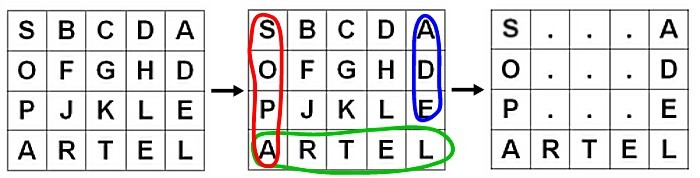

Para efeitos da nota atribuida à resolução de exercícios ao longo do semestre - Submeter até 23:59 de 20 de Novembro
(o problema continuará depois disponível para submissão, mas sem contar para a nota)
[para perceber o contexto do problema deve ler o guião da aula #04]
Todos conhecem o puzzle da "Sopa de Letras", que consiste basicamente em encontrar palavras, num emaranhado de letras.
Uma sopa de letras é basicamente um quadriculado de letras, sempre maiúsculas, e uma palavra pode ser encontrada apenas na horizontal (da direita para a esquerda ou da esquerda para a direita) ou na vertical (de cima para baixo, ou de baixo para cima). Para este problema, as palavras não podem vir na diagonal.
A tua tarefa é resolver uma sopa de letras.
Por exemplo, imagina que tinhas de procurar as seguintes palavras na sopa de letras da figura:
SOPA LETRA EDA
A ideia é que o teu programa descubra onde estão as palavras. Para que mostres que realmente as descobriste, todas as letras que não pertencem a palavras devem ser substituidas por um ponto, como exemplificado na figura. Consulta o exemplo de input e output para clarificares o que deves fazer.
Um ficheiro de input contém vários casos de teste.
A primeira linha de teste contém dois números LINS COLS, indicando respectivamente o número de linhas e colunas da sopa de letras (1 ≤ LINS,COLS ≤ 100).
Seguem-se LINS linhas de input, cada uma contendo COLS letras maiúsculas, sem espaços a separá-las.
De seguida vem N (1 ≤ N ≤ 50), o número de palavras a pesquisar, sendo que as N linhas seguintes contêm precisamente as palavras, também apenas representadas por letras maiúsculas (cada palavra tem o tamanho máximo de 50 letras). É garantido que todas estas palavras aparecem no input apenas uma só vez (numa das quatro direcções válidas)
Um caso com 0 linhas e 0 colunas sinaliza o final do input, e não deve ser processado.
Para cada caso deve começar por ser imprimida uma linha de output, "Input #NUM", onde NUM representa o número do caso, seguido da impressão da sopa de letras, no formato pedido, com as palavras destacadas.
Vê o exemplo para clarificar a maneira como deve ser feito o output.
| Input | Output |
|---|---|
4 5 SBCDA OFGHD PJKLE ARTEL 3 SOPA LETRA EDA 8 10 EABDFGHJNM SASDDFOCVB TXSCSFTCAQ EZVFACILSD AQWUHNUFSV PROBLEMADA HCVDASEFVB WMLFACIFSD 5 ESTE PROBLEMA FICA MUITO FACIL 0 0 |
Input #1 S...A O...D P...E ARTEL Input #2 E......... S.....O... T.....T... E..FACIL.. ......U... PROBLEMA.. .......... ....ACIF.. |
Estruturas de Dados (CC1007)
DCC/FCUP - Faculdade de Ciências da Universidade do Porto